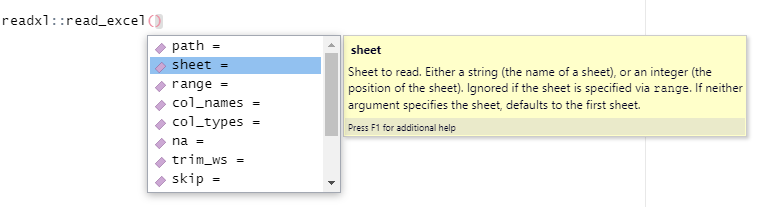
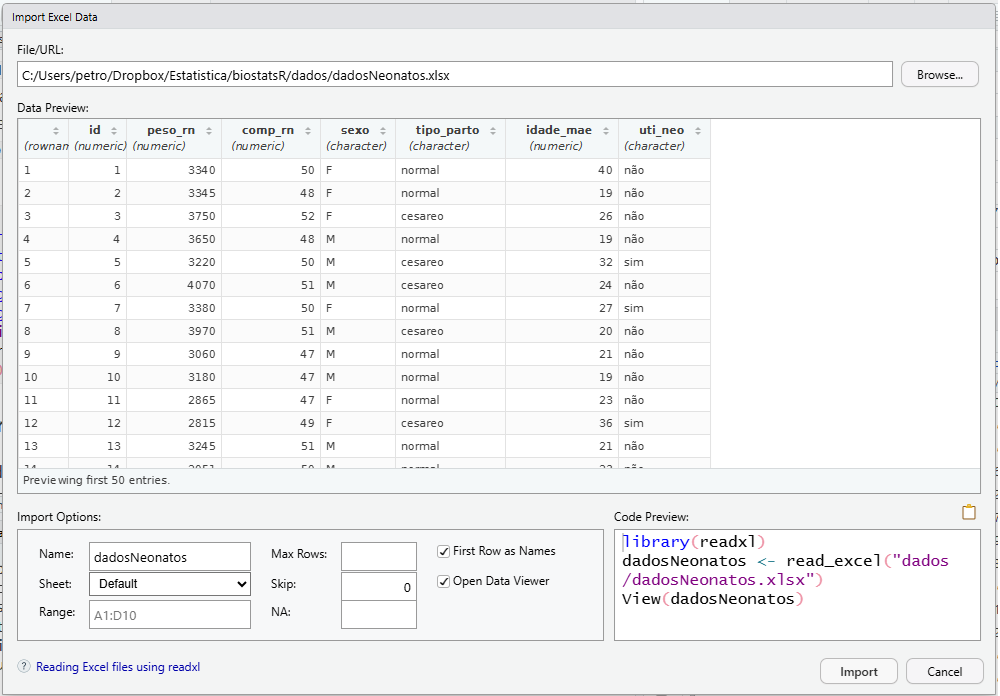
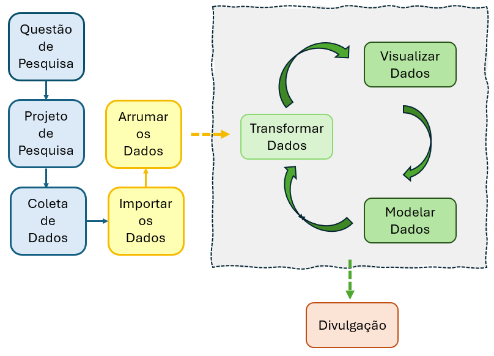

id <- c(1:15)
peso_rn <- c (3340,3345,3750,3650,3220,4070,3380,3970,3060,3180,
2865,2815,3245,2051,2630)
comp_rn <- c (50,48,52,48,50,51,50,51,47,47,47,49,51,50,44)
sexo <- c ("F", "F", "F", "M", "M", "M", "F", "M", "M", "M", "F", "F", "M", "M", "F")
tipo_parto <- c ("normal", "normal", "cesareo", "normal", "cesareo", "cesareo", "normal", "cesareo", "normal", "normal", "normal", "cesareo", "normal", "normal", "normal")
idade_mae <- c (40,19,26,19,32,24,27,20,21,19,23,36,21,23,23) 5 Manipulação dos dados no R
5.1 Dataframes no R
DataFrames são objetos de dados genéricos em formato tabular, onde os dados são organizados de maneira lógica em linha-e-coluna semelhante ao de uma planilha do Excel. O dataframe é uma estrutura bidimensional e pode ser formado com objetos criados previamente, desde que tenham o mesmo comprimento (1).
Uma das formas de criar um DataFrame no R é a partir de um conjunto de vetores, como, por exemplo, estes, relacionados a 15 nascimentos em uma determinada maternidade:
Este grupo de vetores (variáveis) isolados fica difícil de manusear. Portanto, seria útil reuni-los em um só objeto. Pode-se fazer isso, usando a função data.frame(), do R base. Este DataFrame será atribuído a um novo objeto de nome dadosNeonatos.
dadosNeonatos <- data.frame (id,
peso_rn,
comp_rn,
sexo,
tipo_parto,
idade_mae)Verificando a classe deste novo objeto, tem-se:
class (dadosNeonatos)[1] "data.frame"Para observar a modificação realizada, pode-se usar a função str() do R base, digitando no R Script:
str(dadosNeonatos)'data.frame': 15 obs. of 6 variables:
$ id : int 1 2 3 4 5 6 7 8 9 10 ...
$ peso_rn : num 3340 3345 3750 3650 3220 ...
$ comp_rn : num 50 48 52 48 50 51 50 51 47 47 ...
$ sexo : chr "F" "F" "F" "M" ...
$ tipo_parto: chr "normal" "normal" "cesareo" "normal" ...
$ idade_mae : num 40 19 26 19 32 24 27 20 21 19 ...Na saída da função, verifica-se que o dataframe contém 15 linhas e 6 colunas.
5.1.1 Acrescentando variáveis a um dataframe
Será adicionada ao dataframe uma nova variável chamada uti_neo, que indica se cada recém-nascido foi encaminhado ou não para a UTI neonatal logo após o nascimento. Essa variável será construída a partir de um vetor contendo a situação de cada um dos 15 recém-nascidos, e será incorporada como uma nova coluna no dataframe. A sintaxe utilizada para essa operação segue o padrão nome-do-dataframe$nome-da-variável:
dadosNeonatos$uti_neo <- c ("não","não","não","não","sim","não","sim","não","não","não","não","sim","não","não","não")Com isso, a variável uti_neo passa a fazer parte do conjunto de dados, permitindo análises específicas sobre a necessidade de cuidados intensivos neonatais. A funçãostr(), pode ser usada, novamente, para observar a modificação:
str(dadosNeonatos)'data.frame': 15 obs. of 7 variables:
$ id : int 1 2 3 4 5 6 7 8 9 10 ...
$ peso_rn : num 3340 3345 3750 3650 3220 ...
$ comp_rn : num 50 48 52 48 50 51 50 51 47 47 ...
$ sexo : chr "F" "F" "F" "M" ...
$ tipo_parto: chr "normal" "normal" "cesareo" "normal" ...
$ idade_mae : num 40 19 26 19 32 24 27 20 21 19 ...
$ uti_neo : chr "não" "não" "não" "não" ...5.1.2 Transformação de variáveis
Observa-se que todas as variáveis sexo, tipo_parto e uti_neo estão, no dataframe, como caractere (chr). Entretanto, elas são variáveis categóricas, portanto, necessitam ser transformadas para fatores. Como pertencem à classe character, então, basta usar a as.factor() sem necessidade de alterar os rótulos (labels) nos níveis (levels), o que seria necessário com o uso da função factor(), como mostrado na Seção 4.6 e Seção 5.6.3.
dadosNeonatos$tipo_parto <- as.factor(dadosNeonatos$tipo_parto)
dadosNeonatos$sexo <- as.factor (dadosNeonatos$sexo)
dadosNeonatos$uti_neo <- as.factor (dadosNeonatos$uti_neo)Após a transformação, executa-se, novamente, a função str() para ver como ficou a estrutura do dataframe:
str(dadosNeonatos)'data.frame': 15 obs. of 7 variables:
$ id : int 1 2 3 4 5 6 7 8 9 10 ...
$ peso_rn : num 3340 3345 3750 3650 3220 ...
$ comp_rn : num 50 48 52 48 50 51 50 51 47 47 ...
$ sexo : Factor w/ 2 levels "F","M": 1 1 1 2 2 2 1 2 2 2 ...
$ tipo_parto: Factor w/ 2 levels "cesareo","normal": 2 2 1 2 1 1 2 1 2 2 ...
$ idade_mae : num 40 19 26 19 32 24 27 20 21 19 ...
$ uti_neo : Factor w/ 2 levels "não","sim": 1 1 1 1 2 1 2 1 1 1 ...Agora, as três variáveis passaram a ser fatores e as outras mantiveram-se numéricas.
5.1.3 Salvando um dataframe
O dataframe, criado e modificado anteriormente, pode ser salvo para uso posterior no diretório de trabalho. Os formatos mais comuns e eficientes incluem arquivos nativos do R como .RData e .rds, arquivos de texto como .txt, formatos otimizados para Big Data como .parquet, e extensões de outros softwares estatísticos como .xlsx (Excel), .csv (Valores Separados por Vírgula), .sav (SPSS) e .dta (Stata).
As formas bastante usadas para salvar um dataframe são .xlsx e .csv. Para salvar em uma extensão .xlsx, utiliza-se a função write_xlsx () do pacote writexl (2). O dataframe dadosNeonatos será salvo como:
writexl::write_xlsx(dadosNeonatos, "dados/dadosNeonatos.xlsx")Para salvar com a extensão .csv, usar a função write_csv() ou write_csv2() que fazem parte do pacote readr (3). A primeira função, usa "." para a separação dos decimais e "," para separar as variáveis; a segunda função usa "," para os decimais e ";" para separar as variáveis, convenção do Excel para algumas localidades, como o Brasil (4). Portanto, uma maneira de salvar o arquivo é:
write_csv2 (dadosNeonatos, "dados/dadosNeonatos.csv")5.2 Importando dados de outros softwares
É possível inserir dados diretamente no R Script, como visto na Seção 5.1. Entretanto, se o conjunto de dados for muito extenso, torna-se complicado. Desta forma, é melhor construir o dataframe em outro software, como o Excel, SPSS, etc. e, após, quando necessário, importar os dados para o R.
5.2.1 Importando dados de um arquivo CSV
O formato CSV significa Comma Separated Values, ou seja, é um arquivo de valores separados por vírgula. Esse formato de armazenamento é simples e agrupa informações de arquivos de texto em planilhas. É possível gerar um arquivo .csv, a partir de uma planilha do Excel, usando o menu salvar como e escolher CSV.
As funções read_csv() e read_csv2(), pertencentes ao pacote readr, incluído no ecossistema tidyverse (5), podem ser utilizadas para importar arquivos CSV. A principal diferença entre elas está nos separadores de coluna (variáveis) e nos separadores decimais que cada uma utiliza por padrão.
read_csv(padrão americano)separador de colunas: vírgula (,)
separador de decimais: ponto (.)
uso ideal para arquivos gerados no padrão americano
read_csv2(padrão brasileiro/europeu)separador de colunas: ponto e vírgula (;)
separador de decimais: vírgula (,)
uso ideal para arquivos gerados por versões em português do Excel, onde a vírgula é usada nos números decimais
Importante
Ao tentar abrir um arquivo com read_csv() e todas as colunas ficarem agrupadas em uma única linha má estruturada, ou se os números com vírgula virarem texto (character), mudar para read_csv2().
Portanto, quando se importa um arquivo .csv, é importante saber qual a sua estrutura. Verificar se os decimais estão separados por ponto ou por vírgula e se as colunas (variáveis), por vírgula ou ponto e vírgula. Para ver isso, basta abrir o arquivo em um bloco de notas (por exemplo, Bloco de Notas do Windows, Notepad ++, etc.).
Além disso, é necessário saber em que diretório do computador está o arquivo para informar ao comando. Recomenda-se colocar o arquivo na pasta do diretório de trabalho, pois assim basta apenas colocar o nome do arquivo na função de leitura dos dados. Caso contrário, tem-se que se usar todo o caminho (path).
Como exemplo, será importado o arquivo dadosNeonatos.csv que se encontra no diretório de trabalho do autor, salvo anteriormente. Para obter o arquivo, siga os passos da Seção 5.1 ou clique aqui e salve em seu diretório de trabalho.
A estrutura deste arquivo mostra que as colunas estão separadas por ponto e vírgula e, portanto, a leitura dos dados será feita com a função read_csv2() e, como o arquivo está no diretório de trabalho, não há necessidade de informar o diretório completo. Os dados serão colocados em um objeto de nome neonatos 1:
1 A mudança do nome do dataframe de dadosNeonatos para neonatos é desnecessária. Foi realizada apenas por questões didáticas.
library(readr)
neonatos <- read_csv2("dados/dadosNeonatos.csv")Use a função str() para visualizar o conjunto de dados:2
2 Observe, na saída, que a variável uti_neo aparece palavras com acentuação (“não”). Às vezes, ao abrir o arquivo com a função read_csv2(), pode acontecer de esta palavra aparecer, por exemplo, como: “n\\xe3o”. Louco, não é? Se ocorrer isso, use, após o nome do arquivo e separado por vírgula, o argumento locale = locale(encoding = "latin1"). Dessa forma, o erro será corrigido.
str(neonatos)spc_tbl_ [15 × 7] (S3: spec_tbl_df/tbl_df/tbl/data.frame)
$ id : num [1:15] 1 2 3 4 5 6 7 8 9 10 ...
$ peso_rn : num [1:15] 3340 3345 3750 3650 3220 ...
$ comp_rn : num [1:15] 50 48 52 48 50 51 50 51 47 47 ...
$ sexo : chr [1:15] "F" "F" "F" "M" ...
$ tipo_parto: chr [1:15] "normal" "normal" "cesareo" "normal" ...
$ idade_mae : num [1:15] 40 19 26 19 32 24 27 20 21 19 ...
$ uti_neo : chr [1:15] "não" "não" "não" "não" ...
- attr(*, "spec")=
.. cols(
.. id = col_double(),
.. peso_rn = col_double(),
.. comp_rn = col_double(),
.. sexo = col_character(),
.. tipo_parto = col_character(),
.. idade_mae = col_double(),
.. uti_neo = col_character()
.. )
- attr(*, "problems")=<pointer: 0x00000149510ffa10> Como se observa na saída do comando, as variáveis foram importadas em classes que vão necessitar transformações para serem usadas. Isto deve ser feito como foi visto na Seção 5.1.2.
Atenção
Toda vez que se importa um dataset, deve-se verificar atentamente a sua estrutura antes de dar seguimento as análises
5.2.2 Importando um arquivo do Excel
O pacote readxl, pertencente ao conjunto de pacotes do tidyverse, facilita a obtenção de dados do Excel para o R, através da função read_excel(). Esta função tem o argumento sheet =, que deve ser usado indicando o número ou o nome da planilha, colocado entre aspas. Este argumento é importante se houver mais de uma planilha, caso contrário, ele é opcional. Para saber os outros argumentos da função, coloque o cursor dentro da função e aperte a tecla Tab (Figura 5.1). Isto abrirá um menu com os argumentos:

Será feita a leitura dos mesmos dados, usados na leitura de dados csv, apenas o arquivo agora está no formato .xlsx. Para obter o arquivo, siga os mesmos passos, usados anteriormente. Clique aqui e salve em seu diretório de trabalho.
Os dados serão atribuídos a um objeto com outro nome (recemNatos):
recemNatos <- readxl::read_excel("dados/dadosNeonatos.xlsx")
str(recemNatos)tibble [15 × 7] (S3: tbl_df/tbl/data.frame)
$ id : num [1:15] 1 2 3 4 5 6 7 8 9 10 ...
$ peso_rn : num [1:15] 3340 3345 3750 3650 3220 ...
$ comp_rn : num [1:15] 50 48 52 48 50 51 50 51 47 47 ...
$ sexo : chr [1:15] "F" "F" "F" "M" ...
$ tipo_parto: chr [1:15] "normal" "normal" "cesareo" "normal" ...
$ idade_mae : num [1:15] 40 19 26 19 32 24 27 20 21 19 ...
$ uti_neo : chr [1:15] "não" "não" "não" "não" ...Como se vê ao analisar a estrutura, deve-se proceder transformações nas variáveis, como visto na Seção 5.1.2.
Na Figura 5.1, o duplo dois pontos (::) precedido do nome do pacote, no caso readxl, especifica a procedência da função usada. Nessa situação, não há necessidade de usar a função library() para carregar o pacote já instalado em um diretório (biblioteca) previamente.
5.2.3 Importando arquivos com o RStudio
O RStudio permite importar arquivos sem a necessidade de digitar comandos, que, para alguns podem ser tediosos.
Na tela inicial do RStudio, à direita, na parte superior, clique na aba Environment e em Import Dataset. Esta ação abre um menu que permite importar arquivos .csv, Excel, SPSS, etc.
Por exemplo, para importar o arquivo dadosNeonatos.xlsx, clicar em From Excel... Abre uma janela com uma caixa de diálogo. Clicar no botão Browse..., localizado em cima à direita, para buscar o arquivo dadosNeonatos.xlsx. Assim que o arquivo for aberto, ele mostra uma preview do arquivo e, em baixo, à direita mostra uma pré-visualização do código (Figura 5.2)), igual ao digitado anteriormente, que cria um objeto denominado dadosNeonatos, nome do objeto escolhido pelo R, mas pode ser modificado na janela, à esquerda, Import Option em Name, onde pode-se digitar qualquer nome. Após encerrar as escolhas, clicar em Import. É um caminho diferente para fazer o mesmo. Este é um dos fascínios do R!

5.2.4 Importando dados de forma simples
A grande elegância do R está na simplicidade, o pacote rio (R Input/Output) (6) é o modelo de simplicidade quando se fala em importar e exportar dados. Está baseado no conceito de Swiss Army Knife (canivete suíço) e reduz o processo de entrada e saída de dados a duas funções principais: import() e export().
Ele descobre o formato do arquivo automaticamente através da extensão (.csv, .xlsx, .sav, etc.) e chama o pacote correto nos bastidores (como readr, readxl, haven, data.table), sem que se necessite carregar todos eles manualmente.
Não importa a fonte dos dados, a sintaxe é a mesma:
library(rio)
dados <- rio::import("dados/dadosNeonatos.xlsx")
str(dados)'data.frame': 15 obs. of 7 variables:
$ id : num 1 2 3 4 5 6 7 8 9 10 ...
$ peso_rn : num 3340 3345 3750 3650 3220 ...
$ comp_rn : num 50 48 52 48 50 51 50 51 47 47 ...
$ sexo : chr "F" "F" "F" "M" ...
$ tipo_parto: chr "normal" "normal" "cesareo" "normal" ...
$ idade_mae : num 40 19 26 19 32 24 27 20 21 19 ...
$ uti_neo : chr "não" "não" "não" "não" ...Para converter um arquivo de Excel para CSV, basta mudar a extensão no destino:
# Salva um data.frame .xlsx como .csv
rio::export(dados, "dados/dados_rn.csv")Esta função export() faz o mesmo que as funções write_xlsx() e write_csv2(), vistas acima (Seção 5.1.3).
Dica
Para garantir que o rio consiga ler absolutamente qualquer formato (incluindo SPSS, SAS, etc.), é recomendado instalar os pacotes auxiliares recomendados, rodando uma única vez:
rio::install_formats()Assim, quando o rio for chamado a trabalhar, ele vai checar todos os formatos e instalar de uma só vez todos que faltarem no computador. Por isso, a metáfora “canivete suíço” se encaixa nas suas funções.
5.3 Tibble
A maneira mais comum de armazenar dados no R é usar data.frames ou tibble.
Tibble é um novo tipo de dataframe. É como se fosse um dataframe mais moderno. Ele mantém muitos recursos importantes do data frame original, mas remove muitos dos recursos desatualizados.
A maioria dos pacotes do R usa dataframes tradicionais; entretanto, é possível transformá-los em tibble, usando a função as_tibble(), do pacote tibble (7)3. Esse pacote fornece uma versão moderna do dataframe, com impressão mais informativa e comportamento mais previsível. A transformação de um dataframe tradicional em um tibble é um procedimento recomendável, em função da maior flexibilidade destes.
3 A função as_tibble() também fica disponível ao carregar outros pacotes do tidyverse, como o tidyr ou o dplyr, que a reexportam do pacote tibble.
Como exemplo deste procedimento, será usado o dataframe criado na Seção 5.1: dadosNeonatos.
Este é um conjunto de dados da classe data.frame, contendo 15 observações de 7 variáveis (colunas), que pode ser convertido a um tibble, usando a função as_tibble():
library(tibble)
as_tibble(dadosNeonatos)# A tibble: 15 × 7
id peso_rn comp_rn sexo tipo_parto idade_mae uti_neo
<int> <dbl> <dbl> <fct> <fct> <dbl> <fct>
1 1 3340 50 F normal 40 não
2 2 3345 48 F normal 19 não
3 3 3750 52 F cesareo 26 não
4 4 3650 48 M normal 19 não
5 5 3220 50 M cesareo 32 sim
6 6 4070 51 M cesareo 24 não
7 7 3380 50 F normal 27 sim
8 8 3970 51 M cesareo 20 não
9 9 3060 47 M normal 21 não
10 10 3180 47 M normal 19 não
11 11 2865 47 F normal 23 não
12 12 2815 49 F cesareo 36 sim
13 13 3245 51 M normal 21 não
14 14 2051 50 M normal 23 não
15 15 2630 44 F normal 23 não Por padrão, quando o dataset é muito longo, apenas as primeiras dez linhas são mostradas. Aqui, aparece toda a estrutura dos dados. São apresentadas a dimensão da tabela e as classes de cada coluna. Verifica-se que não houve grandes mudanças, apenas o conjunto de dados está estruturalmente mais organizado, mais flexível.
5.4 Pacote tidyverse
A denominada ciência de dados é difícil de definir, pois a definição depende da formação específica de cada cientista de dados. Entretanto, é possível mostrar como a ciência de dados pode ser realizada na prática, constituindo aquilo que se costuma chamar de Ciclo da Ciência de Dados (Figura 5.3).
Primeiramente, os dados brutos são coletados de diversas maneiras (veja Capítulo 3). Após, são armazenados, por exemplo, em Excel, e, em seguida, são arrumados para reduzir problemas de padronização, conceituais e erros ou exclusão de variáveis e casos que não fazem parte do objetivo estabelecido no projeto de pesquisa. Isto constituirá a base de dados analítica.
A base de dados analítica é então transformada, refinada, para produzir medidas resumidoras, tabela e gráficos. Quando necessário, são produzidos modelos estatísticos. O resultado final deve ser comunicado através dos meios de divulgação científica (relatórios, periódicos, livros, jornadas, congressos, GitHub, etc.).

O pacote tidyverse é uma coleção de pacotes para a linguagem de programação R, pensada e desenvolvida para facilitar e otimizar o fluxo de trabalho em ciência de dados (5).
Em vez de ser um pacote único, ele é um “meta-pacote”, o que significa que, ao instalá-lo, você instala vários pacotes menores que trabalham em conjunto.
A filosofia principal por trás do tidyverse é a de dados “tidy” (arrumados ou organizados) (8), onde:
Cada variável está em uma coluna.
Cada observação está em uma linha.
Cada valor está em uma célula.
Seguindo essa lógica, as funções e pacotes do tidyverse são projetados para facilitar a manipulação dos dados dentro do Ciclo da Ciência de Dados (Figura 5.3), tornando a manipulação, a análise e a visualização de dados mais consistentes e intuitivas.
5.4.1 Principais Pacotes do tidyverse
O tidyverse simplifica tarefas complexas, oferecendo ferramentas específicas para cada etapa do Ciclo de Ciências de Dados. Alguns dos pacotes mais importantes são:
dplyr: Para manipulação de dados. Contém funções essenciais para filtrar linhas, selecionar colunas, criar novas variáveis, e resumir dados.
ggplot2: Para visualização de dados. É um dos pacotes mais populares do R para criar gráficos esteticamente agradáveis e informativos.
tidyr: Para organizar os dados. Ele transforma dados “bagunçados” (que não seguem o formato tidy) em um formato mais limpo e organizado.
readr: Para importar dados. Permite ler arquivos de texto (como CSVs) de forma rápida e robusta.
tibble: Uma versão aprimorada do data.frame do R base. O
tibbleé mais fácil de usar e interage melhor com os pacotes dotidyverse.stringr: Para manipular strings (textos). Simplifica as tarefas de trabalhar com dados de texto.
forcats: Para lidar com fatores (variáveis categóricas).
5.4.2 Princípios do tidyverse
O tidyverse causou quase uma revolução na comunidade do R. Alguns chegam a dizer que existe uma linguagem R antes e depois do tidyverse. Pode parecer exagero, mas o certo é que o uso dos princípios do tidyverse foi abraçado pela maioria dos usuários de R e, em função disso, foram criados uma grande quantidade de pacotes que conversam entre si, facilitando o manuseio dos dados.
Os princípios fundamentais são:
Reutilizar estruturas de dados existentes.
Organizar funções simples usando o
pipe4. Esse operador, introduzido por Stefan Milton Bache no pacotemagrittr(9), permite encadear múltiplas operações em uma sequência clara e legível, de forma que a saída de uma função se torna a entrada da próxima. Isso torna o código mais fácil de ler e entender, eliminando a necessidade de criar muitas variáveis intermediárias. Opipepode ser acionado digitando%>%ou usando o atalhoctrl + shift + M5. Neste livro, será dado preferência para opipenativo do R (|>).Usar uma sintaxe consistente: As funções dos pacotes tidyverse seguem uma lógica de nomeação e de argumentos parecida, facilitando a memorização e o uso.
Projetado com foco nos seres humanos, priorizando a eficiência do programador.
4 O nome é uma referência ao famoso quadro do pintor belga René Magritte La Trahison des images (Ceci n’est pas une pipe).
5 Além do pipe, indiretamente, embutido no tidyverse, existe o pipe nativo do R (|>) que também pode ser usado com as mesmas funções do %>%. No menu Tools > Global Options… > Code e marque a opção Use native pipe operator |> para que o atalho ctrl + shift + M retorne sempe o pipe nativo. Desmarcado, retorna o pipe magrittr.
Quando o tidyverse é carregado, todos os pacotes embutidos nele, serão carregados.
library(tidyverse)
Conflito de funções ao carregar tidyverse
Ao carregar o pacote tidyverse ou qualquer outro, podem surgir mensagens de conflito indicando que funções previamente disponíveis foram sobrescritas por versões de mesmo nome.
No exemplo apresentado, as funções filter() e lag() do pacote stats foram substituídas pelas versões do pacote dplyr.
Para utilizar as funções originais do pacote stats após esse carregamento, é necessário especificar o namespace diretamente, usando duplo dois pontos (::):
stats::filter() e stats::lag().
5.5 Pacote dplyr
Um dos pacotes de maior utilidade abarcado pelo tidyverse é o dplyr. Ele permite realizar transformação dos dados de uma forma simples e eficiente. O uso dos verbos dplyr, aliado ao operador pipe, tendem a tornar os scripts mais “enxutos” e elegantes (10).
As principais funções do dplyr são:
select()- seleciona colunas
arrange()- ordena uma variável em ordem crescente ou decrescente
filter()- filtra linhas
mutate()- cria/modifica colunas
group_by()- agrupa por fatores
summarise()- sumariza a base
Todas as funções têm as mesmas características: o primeiro argumento é um tibble e os demais definem a ação da função.
Neste capítulo e em muitos outros deste livro, será utilizado o dataframe dadosMater.xlsx.
5.6 Dataframe dadosMater.xlsx
O arquivo dadosMater.xlsx é um dataframe constituído por dados de 1368 partos consecutivos do Hospital Geral de Caxias do Sul (HGCS)6, durante um estudo sobre infecções congênitas (11). Para baixar esses dados, clique aqui e faça o download para o diretório de trabalho, para uso posterior.
6 Hospital Escola da Universidade de Caxias do Sul, RS.
5.6.1 Leitura dos dados
Para ler arquivos do Excel (.xlsx), o pacote ideal é o readxl.7 Ele é leve, rápido e não depende do Excel instalado. A função a ser usada é read_excel(). O objeto mater será utilizado para receber os dados 8:
7 Poderia usar o pacote rio com a função import():
dados <- rio::import("dados/dadosMater.xlsx")
8 O nome mater é uma escolha do autor, nesta seção. Em outros momentos, será denominado, simplesmente, dados. O nome do objeto é uma escolha pessoal.
mater <- readxl::read_excel("dados/dadosMater.xlsx")
Importante
O comando para carregar o conjunto de dados somente funciona, sem colocar o caminho completo, se tudo está sendo realizado no diretório de trabalho.
Como rotina, em análise de dados, após a leitura é interessante explorar a estrutura dos dados. A função as_tibble() do pacote tibble é interessante para ver a estrutura dos dados:
mater <- tibble::as_tibble(mater)
print(mater)# A tibble: 1,368 × 30
id idade_mae altura peso ganho_peso anos_est cor estado_civil renda
<dbl> <dbl> <dbl> <dbl> <dbl> <dbl> <dbl> <dbl> <dbl>
1 1 42 1.65 69.9 3.9 3 2 1 1.45
2 2 29 1.66 78 16.5 11 1 2 2.41
3 3 19 1.72 81 5 9 2 1 1.93
4 4 31 1.55 74 43 5 2 2 1.45
5 5 34 1.6 60 15 7 2 2 0.48
6 6 29 1.5 60 11.4 8 2 2 0.96
7 7 30 1.54 75.5 10.5 4 1 2 1.2
8 8 34 1.63 61 9 6 1 2 2.41
9 9 17 1.68 57 15 10 1 2 2.17
10 10 32 1.5 70 11.4 1 2 2 0.72
# ℹ 1,358 more rows
# ℹ 21 more variables: fumo <dbl>, quant_fumo <dbl>, prenatal <dbl>,
# para <dbl>, droga <dbl>, ig <dbl>, tipo_parto <dbl>, peso_pla <dbl>,
# sexo <dbl>, peso_rn <dbl>, comp_rn <dbl>, pc_rn <dbl>, apgar1 <dbl>,
# apgar5 <dbl>, uti_neo <dbl>, obito <dbl>, hiv <dbl>, sifilis <dbl>,
# rubeola <dbl>, toxo <dbl>, inf_cong <dbl>Por padrão, a função retorna as dez primeiras linhas 9. Além disso, colunas que não couberem na largura da tela serão omitidas. Também são apresentadas a dimensão da tabela e as classes de cada coluna. Observa-se que ele tem 1368 linhas (observações) e 30 colunas (variáveis). Além disso, verifica-se que todas as variáveis estão como numéricas (dbl) e, certamente, algumas, dependendo do objetivo na análise, precisarão ser transformadas.
9 Para inserir maior número de linhas: print(n = ...)
O significado de cada uma das variáveis do tibble mater é o seguinte:
- id \(\to\) identificação do participante
- idade_mae \(\to\) idade da parturiente em anos
- altura \(\to\) altura da parturiente em metros
- peso \(\to\) peso da parturiente em kg
- ganho_peso \(\to\) aumento de peso durante a gestação
- anos_est \(\to\) anos de estudo completos
- cor \(\to\) cor declarada pela parturiente: 1 = branca; 2 = não branca
- estado_civil \(\to\) estado civil: 1 = solteira; 2 = casada ou companheira
- renda \(\to\) renda familiar em salários mínimos
- fumo \(\to\) tabagismo: 1 = sim; 2 = não
- quant_fumo \(\to\) quantidade de cigarros fumados diariamente
- prenatal \(\to\) realizou pelo menos 6 consultas no pré-natal? 1 = sim; 2 = não
- para \(\to\) número de filhos paridos
- droga \(\to\) drogadição? 1 = sim; 2 = não
- ig \(\to\) idade gestacional em semanas
- tipo_parto \(\to\) tipo de parto: 1 = normal; 2 = cesareana
- peso_pla \(\to\) peso da placenta em gramas
- sexo \(\to\) sexo do recém-nascido (RN): 1 = masc; 2 = fem
- peso_rn \(\to\) peso do RN em gramas
- comp_rn \(\to\) comprimento do RN em cm
- pc_rn \(\to\) perímetro cefálico do recém-nascido em cm
- apgar1 \(\to\) escore de Apgar no primeiro minuto
- apgar5 \(\to\) escore de Apgar no quinto minuto
- uti_neo \(\to\) RN necessitou de terapia intensiva? 1 = sim; 2 = não
- obito \(\to\) óbito no período neonatal? 1 = sim; 2 = não
- hiv \(\to\) parturiente portadora de HIV? 1 = sim; 2 = não
- sifilis \(\to\) parturiente portadora de sífilis? 1 = sim; 2 = não
- rubeola \(\to\) parturiente portadora de rubéola? 1 = sim; 2 = não
- toxo \(\longrightarrow\) parturiente portadora de toxoplasmose? 1 = sim; 2 = não
- inf_cong \(\to\) parturiente portadora de alguma infecção congênita? 1 = sim; 2 = não
O tibble mater pode ser facilmente modificado com os verbos do pacote dplyr.
5.6.2 Selecionando colunas
A função select () pode ser usada para escolher quais colunas (variáveis) entrarão na análise. Ela recebe como primeiro argumento o conjunto de dados e os demais argumentos são os nomes das colunas. O conjunto de dados mater contém 30 colunas e muitas podem ser removidas, dependendo do objetivo da análise.
mater <- dplyr::select(mater, - obito, -hiv, -sifilis, -rubeola, -toxo)Note que foi usado o sinal de menos (-) antes das variáveis, porque elas foram removidas. Também poderiam ser listadas as variáveis que permanecem que, automaticamente, as não listadas serão removidas.
Outra maneira, pode ser colocando o número da coluna como abaixo, o sinal de subtração antes da função concatenar c() com os números das colunas a serem removidas (25 a 29):
mater <- dplyr::select(mater, - c(25:29))A função str() permite visualizar a nova estrutura:
str(mater)tibble [1,368 × 25] (S3: tbl_df/tbl/data.frame)
$ id : num [1:1368] 1 2 3 4 5 6 7 8 9 10 ...
$ idade_mae : num [1:1368] 42 29 19 31 34 29 30 34 17 32 ...
$ altura : num [1:1368] 1.65 1.66 1.72 1.55 1.6 1.5 1.54 1.63 1.68 1.5 ...
$ peso : num [1:1368] 69.9 78 81 74 60 60 75.5 61 57 70 ...
$ ganho_peso : num [1:1368] 3.9 16.5 5 43 15 11.4 10.5 9 15 11.4 ...
$ anos_est : num [1:1368] 3 11 9 5 7 8 4 6 10 1 ...
$ cor : num [1:1368] 2 1 2 2 2 2 1 1 1 2 ...
$ estado_civil: num [1:1368] 1 2 1 2 2 2 2 2 2 2 ...
$ renda : num [1:1368] 1.45 2.41 1.93 1.45 0.48 0.96 1.2 2.41 2.17 0.72 ...
$ fumo : num [1:1368] 2 2 2 2 2 1 1 2 2 2 ...
$ quant_fumo : num [1:1368] 0 0 0 0 0 10 20 0 0 0 ...
$ prenatal : num [1:1368] 2 1 2 2 2 1 1 2 2 1 ...
$ para : num [1:1368] 5 0 0 1 2 1 2 1 0 4 ...
$ droga : num [1:1368] 2 2 2 2 2 2 2 2 2 2 ...
$ ig : num [1:1368] 29 33 33 33 33 33 33 33 34 34 ...
$ tipo_parto : num [1:1368] 2 2 1 1 2 1 2 1 1 2 ...
$ peso_pla : num [1:1368] 224 1118 452 432 574 ...
$ sexo : num [1:1368] 2 2 2 2 2 2 2 2 2 2 ...
$ peso_rn : num [1:1368] 1035 2300 1580 1840 2475 ...
$ comp_rn : num [1:1368] 35.5 45 39 41 47 41 44 44 47 48 ...
$ pc_rn : num [1:1368] 28 32 28 32 32 29 32 32 30 27 ...
$ apgar1 : num [1:1368] NA NA NA NA NA NA NA NA NA NA ...
$ apgar5 : num [1:1368] NA NA NA NA NA NA NA NA NA NA ...
$ uti_neo : num [1:1368] 1 2 1 1 1 1 2 2 1 1 ...
$ inf_cong : num [1:1368] 2 2 2 2 1 2 2 2 2 2 ...A função select () pode ser combinada com outras funções, como filter ().
5.6.3 Modificando e criando novas colunas
Para esta ação, usa-se a função mutate(). Por exemplo, todas as variáveis no tibble mater foram lidas como numéricas. Entretanto, as variáveis cor, estado_civil, fumo, prenatal, droga, tipo_parto, sexo, uti-neo e inf_cong são categóricas e devem ser convertidas para fator, usando a função factor() 10 associada a mutate():
10 Veja também Seção 4.6.
mater <- dplyr::mutate(mater,
cor = factor(cor,
levels = c(1,2),
labels = c("branca", "não branca")),
estado_civil = factor(estado_civil,
levels = c(1,2),
labels = c("solteira", "casada")),
fumo = factor(fumo,
levels = c(1,2),
labels = c("sim", "não")),
prenatal = factor(prenatal,
levels = c(1,2),
labels = c("sim", "não")),
droga = factor(droga,
levels = c(1,2),
labels = c("sim", "não")),
tipo_parto = factor(tipo_parto,
levels = c(1,2),
labels = c("normal", "cesareo")),
sexo = factor(sexo,
levels = c(1,2),
labels = c("masc", "fem")),
uti_neo = factor(uti_neo,
levels = c(1,2),
labels = c("sim", "não")),
inf_cong = factor(inf_cong,
levels = c(1,2),
labels = c("sim", "não")))O conjunto de dados está, agora, estruturado de forma correta.
str(mater)tibble [1,368 × 25] (S3: tbl_df/tbl/data.frame)
$ id : num [1:1368] 1 2 3 4 5 6 7 8 9 10 ...
$ idade_mae : num [1:1368] 42 29 19 31 34 29 30 34 17 32 ...
$ altura : num [1:1368] 1.65 1.66 1.72 1.55 1.6 1.5 1.54 1.63 1.68 1.5 ...
$ peso : num [1:1368] 69.9 78 81 74 60 60 75.5 61 57 70 ...
$ ganho_peso : num [1:1368] 3.9 16.5 5 43 15 11.4 10.5 9 15 11.4 ...
$ anos_est : num [1:1368] 3 11 9 5 7 8 4 6 10 1 ...
$ cor : Factor w/ 2 levels "branca","não branca": 2 1 2 2 2 2 1 1 1 2 ...
$ estado_civil: Factor w/ 2 levels "solteira","casada": 1 2 1 2 2 2 2 2 2 2 ...
$ renda : num [1:1368] 1.45 2.41 1.93 1.45 0.48 0.96 1.2 2.41 2.17 0.72 ...
$ fumo : Factor w/ 2 levels "sim","não": 2 2 2 2 2 1 1 2 2 2 ...
$ quant_fumo : num [1:1368] 0 0 0 0 0 10 20 0 0 0 ...
$ prenatal : Factor w/ 2 levels "sim","não": 2 1 2 2 2 1 1 2 2 1 ...
$ para : num [1:1368] 5 0 0 1 2 1 2 1 0 4 ...
$ droga : Factor w/ 2 levels "sim","não": 2 2 2 2 2 2 2 2 2 2 ...
$ ig : num [1:1368] 29 33 33 33 33 33 33 33 34 34 ...
$ tipo_parto : Factor w/ 2 levels "normal","cesareo": 2 2 1 1 2 1 2 1 1 2 ...
$ peso_pla : num [1:1368] 224 1118 452 432 574 ...
$ sexo : Factor w/ 2 levels "masc","fem": 2 2 2 2 2 2 2 2 2 2 ...
$ peso_rn : num [1:1368] 1035 2300 1580 1840 2475 ...
$ comp_rn : num [1:1368] 35.5 45 39 41 47 41 44 44 47 48 ...
$ pc_rn : num [1:1368] 28 32 28 32 32 29 32 32 30 27 ...
$ apgar1 : num [1:1368] NA NA NA NA NA NA NA NA NA NA ...
$ apgar5 : num [1:1368] NA NA NA NA NA NA NA NA NA NA ...
$ uti_neo : Factor w/ 2 levels "sim","não": 1 2 1 1 1 1 2 2 1 1 ...
$ inf_cong : Factor w/ 2 levels "sim","não": 2 2 2 2 1 2 2 2 2 2 ...O Índice de Massa Corporal (IMC) é um cálculo que relaciona o peso e a altura de uma pessoa para avaliar se ela está com o peso ideal, abaixo do peso, acima do peso ou obesa. É uma ferramenta simples e amplamente utilizada na área da saúde para triagem e acompanhamento do estado nutricional. Para obter esse índice, serão utilizadas as variáveis peso e altura da gestante no início da gravidez. Como visto na Seção 4.4, o cálculo do IMC é dado pela razão entre o peso em kg e a altura em metros elevada ao quadrado. Para criar uma nova coluna com a variável imc, pode-se também usar o mutate().
mater <- dplyr::mutate(mater,
imc = peso/altura^2)
media_imc <- mean(mater$imc, na.rm =TRUE)
round(media_imc,1)[1] 24.65.6.4 Filtrando linhas
A função filter() é usada para criar um subconjunto de dados que obedeçam determinadas condições lógicas: & (e), | (ou) e ! (não). Por exemplo:
- y & !x \(\to\) seleciona y e não x
- x & !y \(\to\) seleciona x e não y
- x | y \(\to\) seleciona x ou y
- x & y \(\to\) seleciona x e y
Um recém-nascido é dito a termo quando a duração da gestação está entre 37 e 42 semanas incompletas. Para extrair do banco de dados mater os recém-nascidos a termo (dados_termo), pode-se usar a função filter():
dados_termo <- dplyr::filter (mater, ig>=37 & ig<42)Observe que, agora, o conjunto de dados dados_termo tem 1084 linhas, número de recém-nascidos a termo do banco de dados original mater (1368). Logo, os recém nascidos a termo correspondem a 79.2% dos nascimentos, nesta maternidade.
Outro exemplo
Para selecionar apenas os meninos, nascidos a termo (dados_termo), codificados como "masc", procede-se da seguinte maneira:
dados_masc <- dplyr::filter (dados_termo, sexo == 'masc')
Alerta
Não esquecer que o sinal de igualdade, no R, é representado por um == (duplo igual)
5.6.5 Sumarizando uma coluna
Para resumir uma coluna, por exemplo, dados_termo$peso_rn, utilizando uma métrica de interesse, como média, mediana, desvio padrão, etc. (Capítulo 6), pode-se usar a função summarise().
resumo <- dplyr::summarise(dados_termo,
n = length (id),
media = mean(peso_rn, na.rm = TRUE),
desvpad = sd(peso_rn, na.rm = TRUE))
resumo# A tibble: 1 × 3
n media desvpad
<int> <dbl> <dbl>
1 1084 3218. 459.Muitas vezes, há necessidade de sumarizar uma coluna agrupada pelas categorias de uma segunda coluna. Por exemplo, peso dos recém-nascidos a termo por sexo. Para isso, além do summarise(), utilizamos também a função group_by().
Para facilitar o trabalho, será usado o operador pipe que pode ser acionado digitando |> ou usando o atalho ctrl + shift + M, como observado na Seção 5.4.2. Em vez de passar o argumento para a função separadamente, é possível escrever o valor ou objeto e, em seguida, usar o pipe para convertê-lo como o argumento da função na mesma linha. Funciona como se o pipe jogasse o objeto dentro da função seguinte.
resumo <- dados_termo |>
dplyr::group_by(sexo) |>
dplyr::summarise(
n = length (id),
media = mean(peso_rn, na.rm = TRUE),
desvpad = sd(peso_rn, na.rm = TRUE))
resumo# A tibble: 2 × 4
sexo n media desvpad
<fct> <int> <dbl> <dbl>
1 masc 591 3277. 452.
2 fem 493 3147. 458.5.6.6 Selecionando linhas específicas
A função slice() do pacote dplyr é usada para selecionar linhas específicas de um dataframe (ou tibble) com base em suas posições. Ela é bastante útil quando se quer extrair subconjuntos de dados sem usar condições lógicas, mas sim índices de linha.
Diferente de filter(), que seleciona linhas baseado em condições, slice() usa números de linhas. Por exemplo, para visualizar as cinco primeiras linhas do conjunto de dados dados_termo, usa-se:
slice(dados_termo, 1:5)# A tibble: 5 × 26
id idade_mae altura peso ganho_peso anos_est cor estado_civil renda
<dbl> <dbl> <dbl> <dbl> <dbl> <dbl> <fct> <fct> <dbl>
1 20 28 1.5 48.5 11 6 não branca casada 3.13
2 21 31 1.55 65 24 5 branca casada 0.72
3 22 27 1.6 60 15 8 não branca casada 2.41
4 23 28 1.58 47 9 8 branca casada 1.69
5 24 18 1.76 65.5 6.5 7 branca solteira 1.93
# ℹ 17 more variables: fumo <fct>, quant_fumo <dbl>, prenatal <fct>,
# para <dbl>, droga <fct>, ig <dbl>, tipo_parto <fct>, peso_pla <dbl>,
# sexo <fct>, peso_rn <dbl>, comp_rn <dbl>, pc_rn <dbl>, apgar1 <dbl>,
# apgar5 <dbl>, uti_neo <fct>, inf_cong <fct>, imc <dbl>A função slice() é compatível com agrupamentos, por exemplo, para selecionar os cinco primeiros casos do tibble dados_termo por sexo:
dados_termo |>
group_by(sexo) |>
slice(1:5)# A tibble: 10 × 26
# Groups: sexo [2]
id idade_mae altura peso ganho_peso anos_est cor estado_civil renda
<dbl> <dbl> <dbl> <dbl> <dbl> <dbl> <fct> <fct> <dbl>
1 20 28 1.5 48.5 11 6 não bran… casada 3.13
2 21 31 1.55 65 24 5 branca casada 0.72
3 22 27 1.6 60 15 8 não bran… casada 2.41
4 23 28 1.58 47 9 8 branca casada 1.69
5 24 18 1.76 65.5 6.5 7 branca solteira 1.93
6 751 17 1.65 60 11.4 7 não bran… solteira 1.92
7 752 30 1.6 54 12 5 branca casada 1.92
8 753 27 1.53 43.5 20.5 11 branca casada 1.93
9 755 28 1.4 60 11.4 8 não bran… casada 2.17
10 756 17 1.55 78 20 10 branca solteira 4.82
# ℹ 17 more variables: fumo <fct>, quant_fumo <dbl>, prenatal <fct>,
# para <dbl>, droga <fct>, ig <dbl>, tipo_parto <fct>, peso_pla <dbl>,
# sexo <fct>, peso_rn <dbl>, comp_rn <dbl>, pc_rn <dbl>, apgar1 <dbl>,
# apgar5 <dbl>, uti_neo <fct>, inf_cong <fct>, imc <dbl>O tidyverse introduziu funções auxiliares como:
slice_head(): que seleciona as primeirasnlinhas.
slice_head(dados_termo, n = 3)# A tibble: 3 × 26
id idade_mae altura peso ganho_peso anos_est cor estado_civil renda
<dbl> <dbl> <dbl> <dbl> <dbl> <dbl> <fct> <fct> <dbl>
1 20 28 1.5 48.5 11 6 não branca casada 3.13
2 21 31 1.55 65 24 5 branca casada 0.72
3 22 27 1.6 60 15 8 não branca casada 2.41
# ℹ 17 more variables: fumo <fct>, quant_fumo <dbl>, prenatal <fct>,
# para <dbl>, droga <fct>, ig <dbl>, tipo_parto <fct>, peso_pla <dbl>,
# sexo <fct>, peso_rn <dbl>, comp_rn <dbl>, pc_rn <dbl>, apgar1 <dbl>,
# apgar5 <dbl>, uti_neo <fct>, inf_cong <fct>, imc <dbl>slice_tail(): que seleciona as últimasnlinhas.
slice_tail(dados_termo, n = 3)# A tibble: 3 × 26
id idade_mae altura peso ganho_peso anos_est cor estado_civil renda
<dbl> <dbl> <dbl> <dbl> <dbl> <dbl> <fct> <fct> <dbl>
1 1359 24 1.52 58.6 14.9 5 branca casada 1.45
2 1360 24 1.6 60 15 6 branca casada 3.86
3 1361 22 1.57 75 2 11 branca casada 7.23
# ℹ 17 more variables: fumo <fct>, quant_fumo <dbl>, prenatal <fct>,
# para <dbl>, droga <fct>, ig <dbl>, tipo_parto <fct>, peso_pla <dbl>,
# sexo <fct>, peso_rn <dbl>, comp_rn <dbl>, pc_rn <dbl>, apgar1 <dbl>,
# apgar5 <dbl>, uti_neo <fct>, inf_cong <fct>, imc <dbl>slice_sample(): seleciona linhas aleatórias. Uma amostra de n = 200 será extraída dotibbledados_termo, como exemplo:
dados_termo200 <- dados_termo |> slice_sample(n = 200)slice_min(): seleciona as linhas com os menores valores em uma coluna específica. Não ordena todo o dataframe, mas sim identifica e extrai as linhas que têm os menores valores na coluna indicada comorder_by. Por exemplo, se o objetivo é extrarir do tibble dados_termo so cinco menores pesos ao nascer de cada sexo:
dados_termo |>
select(peso_rn, sexo) |>
slice_min(order_by = peso_rn,
n = 5,
with_ties = TRUE,
by = sexo)# A tibble: 10 × 2
peso_rn sexo
<dbl> <fct>
1 1425 masc
2 1795 masc
3 1810 masc
4 1980 masc
5 2051 masc
6 1715 fem
7 1785 fem
8 1895 fem
9 2090 fem
10 2095 fem slice_max(): funciona da mesma maneira que oslice_min(), apenas para os maiores valores.
Exercício
Verificar a média e o desvio padrão dos pesos dos recém-nascidos a termo de mães fumantes e não fumantes, por sexo.
Resposta
# Partindo do conjunto de dados `dados_termo` (recém-nascidos a termo), tem-se:
resumo <- readxl::read_excel("dados/dadosMater.xlsx") |>
dplyr::filter(ig >= 37 & ig < 42) |>
dplyr::select(fumo, sexo, peso_rn) |>
dplyr::mutate(fumo = factor(fumo,
levels = c(1,2),
labels = c("sim", "não")),
sexo = factor(sexo,
levels = c(1,2),labels = c("masculino", "feminino"))) |>
dplyr::group_by(sexo, fumo) |>
dplyr::summarise(
media = mean(peso_rn, na.rm = TRUE),
desv_pad = sd(peso_rn, na.rm = TRUE),
.groups = "drop_last")
print(resumo)# A tibble: 4 × 4
# Groups: sexo [2]
sexo fumo media desv_pad
<fct> <fct> <dbl> <dbl>
1 masculino sim 3177. 438.
2 masculino não 3303. 453.
3 feminino sim 2998. 503.
4 feminino não 3190. 435.5.6.7 Ordenando uma coluna
Para ordenar os dados de uma coluna, pode-se usar a função arrange() do dplyr. O primeiro argumento é o conjunto de base. Os demais argumentos são as colunas a serem ordenadas.
Por padrão, a função coloca os dados em ordem crescente, mas é possível alterar e organizar em ordem decrescente usando a função desc(), que recebe o nome da coluna como argumento e ordena os valores em ordem decrescente.
Por exemplo, a renda familiar das parturientes será ordenada de forma ascendente. Em primeiro lugar, apenas como exercício, a renda familiar em salários mínimos será convertida em reais, tomando como base o valor de 2026 de 1621 reais. Após, a variável renda será colocada em ordem crescente com a função arrange(). A seguir, usando as funções slice_head() e slice_tail(), se verificará as 5 menores e as 5 maiores rendas que serão atribuídos a dois objetos (menores e maiores). Estes vão ser exibidos juntos, usando a função bind_rows(), também do dplyr:
# Cinco menores salários em ordem crescente
menores <- mater |> select(renda) |>
mutate(renda = renda *1621.00) |>
arrange(renda) |>
slice_head(n=5)
maiores <- mater |> select(renda) |>
mutate(renda = renda *1621.00) |>
arrange(renda) |>
slice_tail(n=5)
# Exibição
bind_rows(menores, maiores)# A tibble: 10 × 1
renda
<dbl>
1 308.
2 389.
3 665.
4 697.
5 778.
6 15626.
7 15626.
8 15626.
9 17328.
10 17572.5.6.8 Função count()
Permite contar rapidamente os valores únicos de uma ou mais variáveis. Esta função tem os seguintes argumentos.
- x \(\to\) dataframe
- wt \(\to\) pode ser NULL (padrão) ou uma variável
- sort \(\to\) padrão = FALSE; se TRUE, mostrará os maiores grupos no topo
- name \(\to\) O nome da nova coluna na saída; padrão = NULL
Quando o argumento name é omitido, a função retorna n como nome padrão.
Usando o dataframe mater, a função count() irá contar o número de parturientes fumantes, variável dicotômica fumo:
count(mater, fumo)# A tibble: 2 × 2
fumo n
<fct> <int>
1 sim 301
2 não 1067
Exercício
Calcule o percentual de partos cesáreos no tibble mater.
Resposta
mater <- readxl::read_excel("dados/dadosMater.xlsx") |>
dplyr::select(tipo_parto) |>
dplyr::mutate(tipo_parto = factor(tipo_parto,
levels = c(1,2),
labels = c("normal", "cesareo")))
tab <- with(data = mater, table(tipo_parto))
addmargins(tab)tipo_parto
normal cesareo Sum
813 555 1368 round(prop.table(tab), 3)tipo_parto
normal cesareo
0.594 0.406 5.7 Pacote forcats
O pacote forcats é uma das maravilhas do tidyverse voltada exclusivamente para o tratamento de variáveis categóricas no R — ou seja, os fatores. O nome vem de “for categorical variables”, e ele foi criado para resolver os desafios que surgem ao lidar com fatores, especialmente em visualizações e modelagens (12).
O pacote oferece funções intuitivas e poderosas para:
- Reordenar os níveis de um fator;
- Modificar, combinar e recodificar níveis;
- Lidar com níveis raros ou ausentes;
- Preparar fatores para gráficos com
ggplot2(Seção 8.3).
As principais funções do forcats são:
fct_reorder()— Reordena os níveis com base em outra variável (ex: média);fct_infreq()— Reordena os níveis pela frequência (mais comum primeiro);fct_rev()— Inverte a ordem dos níveis;fct_lump()— Agrupa níveis menos frequentes em “outros”;fct_recode()— Renomeia níveis manualmente;fct_drop()— Remove níveis não utilizados;fct_expand()— Adiciona novos níveis.
Como exemplo, será modificada a ordem de como a variável tipo_parto será apresentada. Para ver a ordem dos níveis, pode-se usar:
levels(mater$tipo_parto)[1] "normal" "cesareo"Ou seja, o parto normal está colocado antes do cesáreo Como é uma variável dicotômica, basta inverter a ordem, usando a função fct_rev():
library(forcats)
mater$tipo_parto <- fct_rev(mater$tipo_parto)
levels(mater$tipo_parto)[1] "cesareo" "normal" 5.8 Manipulação de datas
Originalmente, todos os que trabalham com o R queixavam-se de como era frustrante trabalhar com datas. Era um processo que causava grande perda de tempo nas análises. O pacote lubridate (13) foi criado para simplificar ao máximo a leitura de datas e extração de informações das mesmas.
library(lubridate)Quando o lubridate é carregado aparece uma mensagem, avisando que alguns nomes de funções também estão contidas no pacote base do R.
Para evitar confusões e verificar que as funções corretas estão sendo usadas, usa-se o duplo dois pontos (::) antes do nome da função, precedido do nome do pacote, por exemplo: lubridate::date().
Para obter a data atual ou a data-hora, você pode usar as funções today() ou now():
today()[1] "2026-08-11"now()[1] "2026-08-11 18:47:24 -03"5.8.1 Convertendo strings ou caractere para data
Para converter string ou caracteres em datas, basta executar funções específicas adequadas aos dados. Elas determinam automaticamente o formato quando você especifica a ordem do componente. Para usá-los, identifique a ordem em que o ano, o mês e o dia aparecem em suas datas e, em seguida, organize “y”, “m” e “d” na mesma ordem. Isso lhe dá o nome da função do lubridate que analisará a data. Por exemplo, suponhamos a data de 25/12/2022:
natal <- "25/12/2022"
natal[1] "25/12/2022"Aparentemente, o R aceitou a informação como uma data. Entretanto, se for verificada a classe do objeto, tem-se:
class(natal)[1] "character"Estando como caractere, esta data não poderá ser usada em operações com datas, pois necessitaria estar como uma classe date. Para converte-la, usa-se a função dmy():
natal <- dmy(natal)
natal[1] "2022-12-25"class(natal)[1] "Date"Dessa forma, a data, agora está sendo reconhecida pelo R como date. É sempre importante verificar a classe da data.
Às vezes, as datas escritas estão com o mês abreviado, como 25/dez/2022. O procedimento é o mesmo
minha.data <- "25/dez/2022"
minha.data[1] "25/dez/2022"class (minha.data)[1] "character"minha.data <- dmy(minha.data)
minha.data[1] "2022-12-25"class (minha.data)[1] "Date"Se além da data, houver necessidade de especificar o horário, basta usar dmy_h(), dmy_hm() e dmy_hms(). No padrão americano, pode ser usado ymd().
O lubridate traz diversas funções para extrair os componentes de um objeto da classe date.
second()\(\to\) extrai os segundos.minute()\(\to\) extrai os minutos.hour()\(\to\) extrai a hora.wday()\(\to\) extrai o dia da semana.mday()\(\to\) extrai o dia do mês.month()\(\to\) extrai o mês.year()\(\to\) extrai o ano.
Por exemplo, usando a data de nascimento (dn) de um dos netos do autor:
dn <- dmy("06/06/2018")
year(dn)[1] 2018Para acrescentar um horário ao objeto data de nascimento (dn)11:
11 UTC = Coordinated Universal Time
hour(dn) <- 18
dn[1] "2018-06-06 18:00:00 UTC"5.8.2 Juntando componentes de datas
Para juntar componentes de datas e horas, pode-se utilizar as funções make_date() e make_datetime(). Em muitos arquivos, os componentes da data estão em colunas diferentes e há necessidade de juntá-los em uma única coluna para compor a data:
felix <- make_date(year = 2018, month = 06, day = 06)
felix[1] "2018-06-06"Para juntar ano, mês, dia, hora e minuto:
minha.data <- make_datetime(year = 2018,
month = 06,
day = 06,
hour = 18,
min = 00,
sec = 15)
minha.data[1] "2018-06-06 18:00:15 UTC"5.8.3 Extraindo componentes de datas
Quando temos objetos do tipo POSIXt12 podemos extrair componentes ou elementos deles. Para isso são usadas algumas funções específicas do pacote lubridate como mostrado a seguir.
12 POSIXt é uma classe de objetos do R que representa datas e horas. POSIXt significa Portable Operating System Interface for Unix Time, que é um padrão para medir o tempo em segundos desde 1 de janeiro de 1970. Existem duas formas internas de implementar POSIXt: POSIXct e POSIXlt. POSIXct armazena os segundos desde a época UNIX e POSIXlt armazena uma lista de dia, mês, ano, hora, minuto, segundo, etc.
data <- now()
year(data) # Extrai o ano[1] 2026month(data) # Extrai o mês[1] 8week(data) # Extrai a semana[1] 32day(data) # Extrai o dia[1] 11minute(data) # Extrai o minuto[1] 47second(data) # Extrai o segundo[1] 25.03393Para verificar o número de dias tem em um determinado mês, usa-se a função days_in_month():
data1 <- dmy("25/02/2000")
days_in_month(data1) Feb
29 5.8.4 Operações com datas
O pacote lubridate possui funções de duração e de período para manipular as datas. As funções de duração calculam o número de segundos correspondentes a um determinado intervalo de tempo (por exemplo, dias, horas ou minutos). As funções de duração não levam em consideração anos bissextos e horário de verão, enquanto as funções de período consideram esses fatores.
ddays (1) # Número de segundos em 1 dia[1] "86400s (~1 days)"dhours (1) # Número de segundos em 1 hora[1] "3600s (~1 hours)"dminutes (1) # Número de segundos em 1 minuto[1] "60s (~1 minutes)"days (5) # Cria um período de 5 dias[1] "5d 0H 0M 0S"weeks (5) # Cria um período de 5 semanas[1] "35d 0H 0M 0S"Suponha-se que haja necessidade de saber em qual dia cairá após acrescentarmos 5 semanas à data1 (25/02/2000), criada acima:
data1 + weeks (5) [1] "2000-03-31"Adicionando 1 ano à data1 (25/02/2000) com uma função de duração, tem-se:
data1 + dyears (1) [1] "2001-02-24 06:00:00 UTC"Se for adicionado um ano à mesma data, mas agora com uma função de período, tem-se:
data1 + years (1) [1] "2001-02-25"5.8.4.1 Intervalo de tempo entre datas
Um intervalo de tempo pode ser obtido a partir de uma data inicial e uma data final. Suponha que uma gestante tenha como data da sua última menstruação 04/10/2022 e o bebê tenha nascido em 30/06/2023. Qual a idade gestacional em dias? A sintaxe para calcular um intervalo é dada pela subtração das duas datas:
data.inicial <- dmy("04/10/2022")
data.final <- dmy("30/06/2023")
idade_gesta <- data.final - data.inicial
idade_gestaTime difference of 269 daysOu seja a gestação durou 269 dias, constituindo-se em um parto a termo, entre 37 (259 dias) e 42 semanas (294 dias).
Referências
1.
Zuur AF, Ieno EN, Meesters EH. Getting Data into R. Em: A Beginner’s Guide to R. Springer; 2009. p. 29–56.
2.
Ooms J. writexl: Export Data Frames to Excel ’xlsx’ Format [Internet]. 2022. Disponível em: https://CRAN.R-project.org/package=writexl
3.
Wickham H, Hester J, Bryan J. readr: Read Rectangular Text Data [Internet]. 2026. Disponível em: https://CRAN.R-project.org/package=readr
4.
Team RC. write.table: Data Output/CSV files [Internet]. DataCamp; 2022. Disponível em: https://www.rdocumentation.org/packages/utils/versions/3.6.2/topics/write.table
5.
Wickham H, Averick M, Bryan J, Chang W, et al. Welcome to the Tidyverse. Journal of Open Source Software. 2019;4(43):1686.
6.
Chan C, Leeper TJ, Becker J, Schoch D. rio: A Swiss-army knife for data file I/O [Internet]. 2023. Disponível em: https://cran.r-project.org/package=rio
7.
Müller K, Wickham H. tibble: Simple Data Frames [Internet]. 2026. Disponível em: https://CRAN.R-project.org/package=tibble
8.
Wickham H. Tidy Data. Journal of Statistical Software. 2014;59(10):11–23.
9.
Bache SM, Wickham H. magrittr: A Forward-Pipe Operator for R. 2022.
10.
Wickham H, François R, Henry L, Müller K, et al. dplyr: A grammar of data manipulation. R package version 04. 2015;3:156.
11.
Madi JM, Souza R da S de, Araujo BF de, Oliveira Filho PF, et al. Prevalence of toxoplasmosis, HIV, syphilis and rubella in a population of puerperal women using Whatman 903 filter paper. The Brazilian Journal of Infectious Diseases. 2010;14(1):24–9.
12.
Damiani A, Milz B, Lente C, Outros. O pacote forcats [Internet]. Ciência de Dados em R. R6 Consultoria; 2022. Disponível em: https://livro.curso-r.com/7-6-forcats.html#o-que-s%C3%A3o-fatores
13.
Grolemund G, Wickham H. Dates and Times Made Easy with lubridate. Journal of Statistical Software [Internet]. 2011;40(3):1–25. Disponível em: https://www.jstatsoft.org/v40/i03/